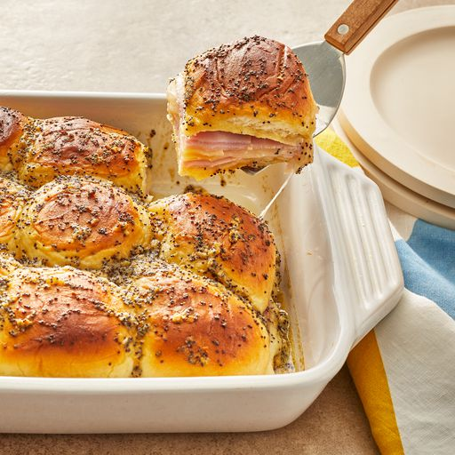

Baked Ham and Cheese Sliders

These baked ham and cheese sliders are the most delicious sandwiches and perfect for any party.
They are so good that even the pickiest of eaters will eat these!
Ingredients
- ¾ cup melted butter
- 1 ½ tablespoons Dijon mustard
- 1 ½ teaspoons Worcestershire sauce
- 1 ½ tablespoons poppy seeds
- 1 tablespoon dried minced onion
- 24 mini sandwich rolls or 12 large
- 1 pound thinly sliced cooked deli ham
- 1 pound thinly sliced Swiss cheese
Steps
- Gather all ingredients. Preheat the oven to 350 degrees F (175 degrees C). Grease a 9x13-inch baking dish.
- Mix butter, Dijon mustard, Worcestershire sauce, poppy seeds, and dried onion in a bowl.
- Separate the tops from the bottoms of the rolls; arrange the bottom pieces in a layer in the prepared baking dish.
Layer about 1/2 of the ham onto the rolls; add a layer of Swiss cheese and top with remaining ham slices.
- Place the tops of the rolls onto the sandwiches. Pour mustard mixture evenly over the rolls
- Bake in the preheated oven until the rolls are lightly browned and the cheese has melted, about 20 minutes.
Slice into individual rolls through the ham and cheese layers to serve.